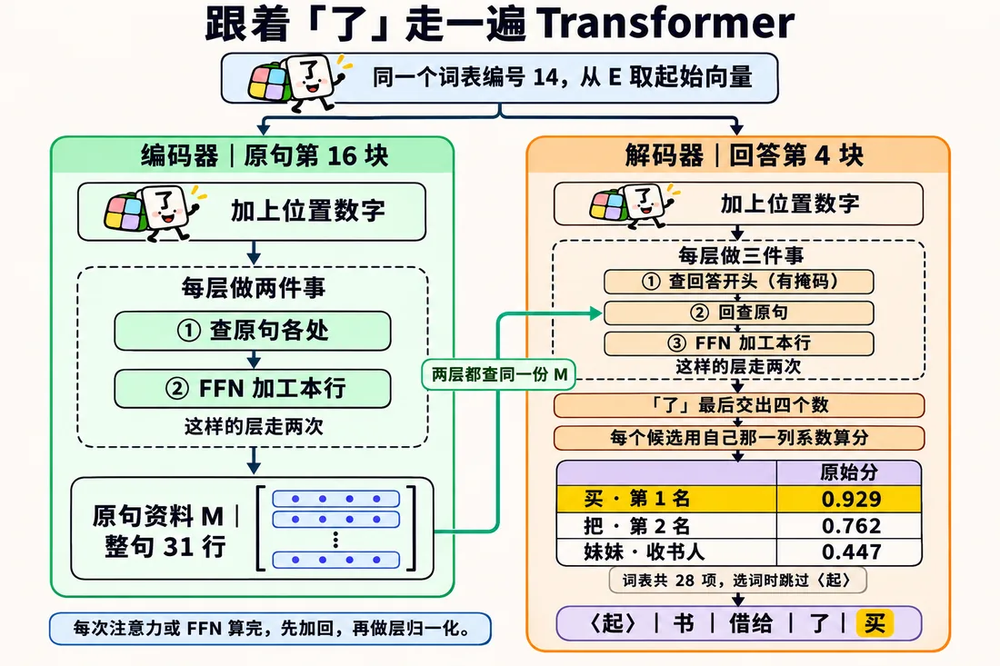
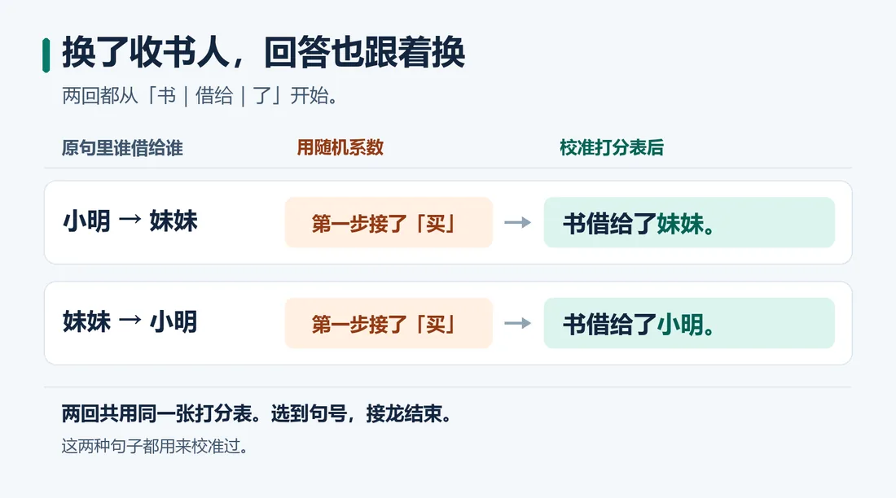
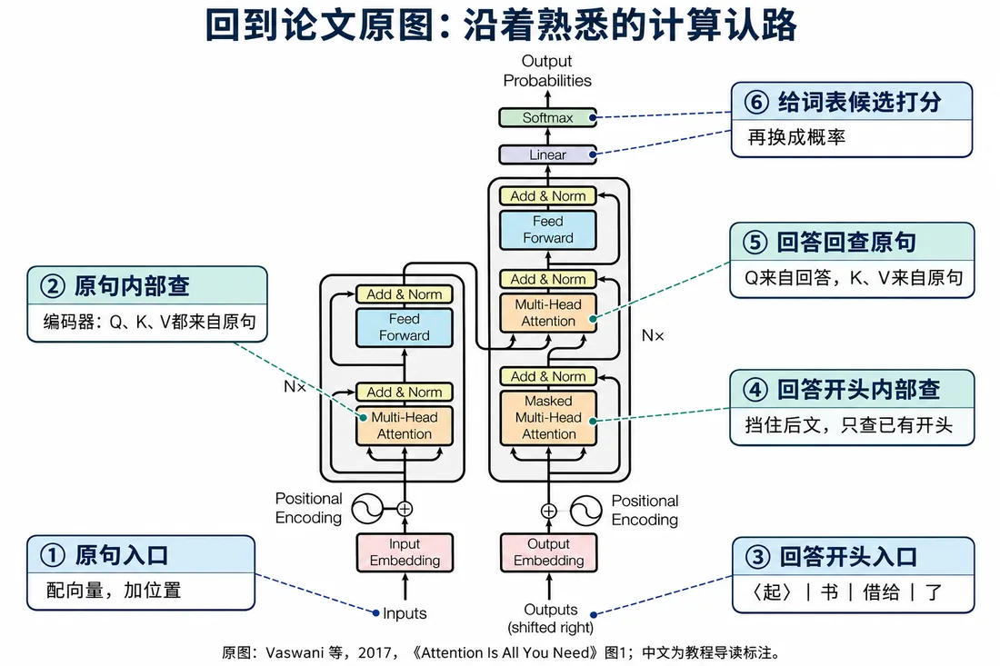

我们在这儿
前面三篇分别做了这些事：
现在写到〈起〉｜书｜借给｜了。
要拿“了”交出的四个数，给词表候选打分。这一篇看怎么选下一个词。
这一篇要解决用 Wout 给候选词打分、转概率，并看清少量校准和完整训练的边界。
大概阅读约 13–17 分钟
“了”最后交出四个数。
词表里每个候选词，都配专属的一列系数。
把这四个数和那一列系数逐个相乘，再加上偏置，这个候选就得到一个分。
第 1 篇去重得到 27 种 Token，加上〈起〉，一共 28 项。
打分矩阵 Wout 是 4 行、28 列。
每个候选词还有一个偏置。28 个偏置合起来，记作 bout。
这次先让程序随机填，填好后固定。
再用 softmax，把 28 个分数转成 28 个概率，总和为 1。
上面的公式可以这样理解：
这里的 out 是它名字的一部分，和第 12 篇的 O 不是同一个矩阵。WO 是 4×4，Wout 是 4×28。
这里只展开两项讲关键差别，其余候选先折叠；真实计算时 28 项会一起打分、一起 softmax。
先看两个候选的分数：
原句明明说借给妹妹，该接人名，却接出个“买”。
差距最大的是第四项：
〈起〉只是开场信号，不算候选词。先把它从候选里拿掉，在剩下的 27 个里挑分最高的。
这叫贪心选词。
这里说的是 softmax 之前的打分；先看打分排名挑词，softmax 再把这些打分换成总和为 1 的概率。

每选出一个词，就把它接回开头，用同一套参数算下一个词。这叫自回归生成。
照随机表接了四次，写成“书借给了买了买了”。
第一步选错的“买”，又被当成接着写的依据。一步错，步步错。
试个省事办法：把“妹妹”那一列第 4 个系数，从 -0.048 改成 -0.4。
两个负数相乘得正，贡献的分数变多。“妹妹”涨到约 0.98，超过“买”，这回接对了。
可把原句里的“小明”“妹妹”对调，回答开头和打分表照旧，电脑仍接“妹妹”。
刚才那一改，两回都给妹妹加了分。同一张表，得过两关。
这里可以先歇一下，下次从这一站接着读。
先把手改系数恢复。
两种原句，各出两题：
正确该接的目标定为 2 分，另外两个定为 0 分。
程序反过来找合适的系数和偏置，让四道题都贴近目标。
调好后，用同一套系数，两句都能完整生成。
训练大语言模型，本质就是拿海量文本反复做“猜下一个 Token”：
课堂示例数值：这里只拿少量题目演示参数怎么调，不是大语言模型的完整训练过程。
这几句是练过的例子。要判断模型会不会举一反三，还得拿没练过的句子测。
回到现实，看 2017 年《Attention Is All You Need》的图 1。
我们在平行世界里一步步搭出来的，正是这张图。
最后，用“了”的四个数让电脑接出“书借给了妹妹。”，从数字到词，每一步都能翻回去重算。
动手接完，再看静态图：同一张表怎么把两句都接完。

先看这张表。最后再翻到论文架构图，把我们的路线和原图对上。

写在最后：从一句话，到一台 Transformer
回头看，我们手里一直只有那一句话。
先把词变成数。长句拆成 31 个小单元，每个单元配上一组能算的数，再记上它站在第几个位置。文字，就这样落进了表格。
再让每个位置会“查”。这是全程的主角注意力。
分差太大容易偏，就除以 √d 收一收。一条路看不全，就分两个头各查各的，再拼起来。
查回来，再加工、稳住。新线索加回自己身上，是残差；同一行用两层乘加重新组合，是 FFN；每过一轮用层归一化把尺度理整齐。编码器就一层层堆起来。
最后开口回答。
这些零件没有一个是凭空掉下来的，每一个都是为了解决前一步那个具体的麻烦，才被请进来的。
现在，2017 年那张架构图上的每一块，你都能说出它在干什么、为什么非有它不可。这就是我们从一句话出发，想摸到的东西。
这一篇收个尾
这一篇拿到：Wout、softmax 概率和自回归生成的完整接龙流程。
下一篇接着看：没有新篇，回到开头自己动手拆。
送一句里尔克的话：
Be patient toward all that is unsolved in your heart. 请对你心中所有尚未解开的谜题，保持耐心。
这段路，我陪着你一起拆开了 Transformer。我把我看懂的一切讲给你，但我也清楚，我的理解存在太多疏漏。
往后再遇见庞大复杂的事物，惟愿你依旧愿意停下来，试着拆开看一看。带着你的疑问，继续往前走。